Tutorial 6 of 10
Flow over a weir
An open channel with a weir: set a discharge, measure the water level and compare it with the weir formula.
A weir is a wall across a channel that the water has to flow over. How high the water rises in front of it for a given discharge is the oldest question in hydraulics, and the reason weirs are used to measure flow. In this tutorial you send a known discharge down a channel, let the simulation find the water level, and compare it with the textbook formula.
The channel is 6 m long and 0.5 m wide. The weir is 0.51 m high and 0.25 m thick, and the discharge is 0.05 m³/s (50 litres a second).
What you will learn
- build a channel with a structure in it
- use the hydraulic boundaries: an inlet by flow rate, a free outflow and an open top
- record the discharge through a boundary and the water depth at a gauge
- judge when a free-surface run has become steady
Computer time: about a minute for the mesh and several minutes for the run, on four cores.
1Open the example
Start EasyFOAM. This case is one of the examples on the start page: it comes with every setting filled in, and this tutorial walks through each of them so that you understand the case and could build it yourself.
- Click Flow over a weir.

2Name the project
The project is an ordinary folder that EasyFOAM creates for you.
- Type a name, for example
weir. - Click Create project.

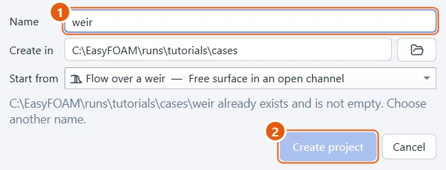
3The weir
The weir is a plain box. Like the pipe in the earlier tutorial, it is larger than the channel on purpose: it sticks out through both side walls and through the bed, so that the mesh is cut cleanly and no thin gaps are left at its edges.
- The shape weir.
- Corner (min):
2.52,-1,-1. Well outside the channel in y and z. - Corner (max):
2.77,2,0.51. The last number is the height of the crest. - Surface refinement
1on the weir.

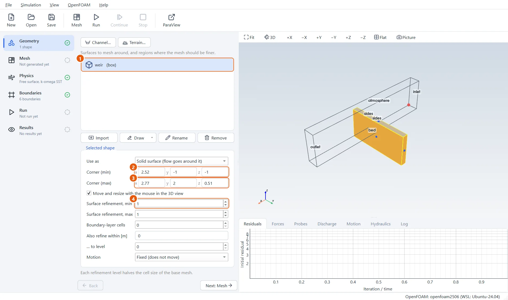
4The channel
The base mesh is the channel: 6 m long, 0.5 m wide and 1.5 m high, so that there is room for air above the water. Its faces are named for what they will be.
- Corner (max):
6,0.5,1.5. - Cells:
96,8,24, which makes 62.5 mm cubes. inletandoutletat the two ends,sidesalong the channel.bedat the bottom is awall;atmosphereat the top is an opening.- Click Mesh in the toolbar (or press F5).

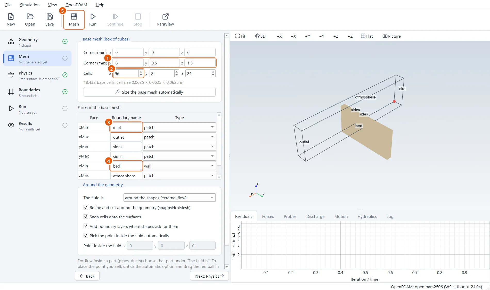
5The mesh
The mesh has about 20,000 cells, with finer ones on the weir. The weir itself is now a hole in the mesh with a wall called weir around it.
- The number of cells.
- The weir stands in the channel; the boundaries are listed in the corner of the view.

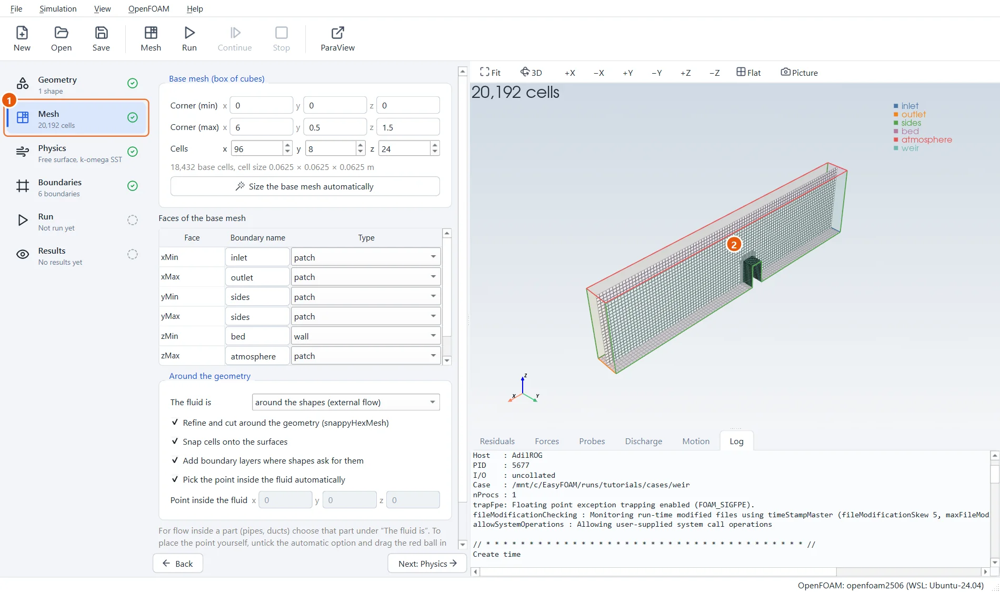
6Water, air and turbulence
The flow type is the free-surface one. Flow over a weir is turbulent, so a turbulence model is switched on.
- Flow type: Free surface: water and air.
- Turbulence: k-omega SST.
- Fluid: Water.

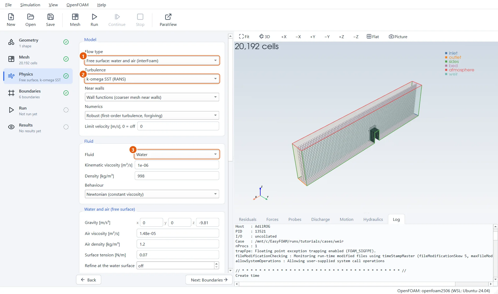
7Start with a full reservoir
A run that starts with an empty channel spends most of its time filling up. Start with the reservoir already full to just below the crest instead: one box of water from the inlet to the weir, 0.5 m deep.
- One box: from
0, 0, 0to2.52, 0.5, 0.5. - Gravity:
0,0,-9.81.

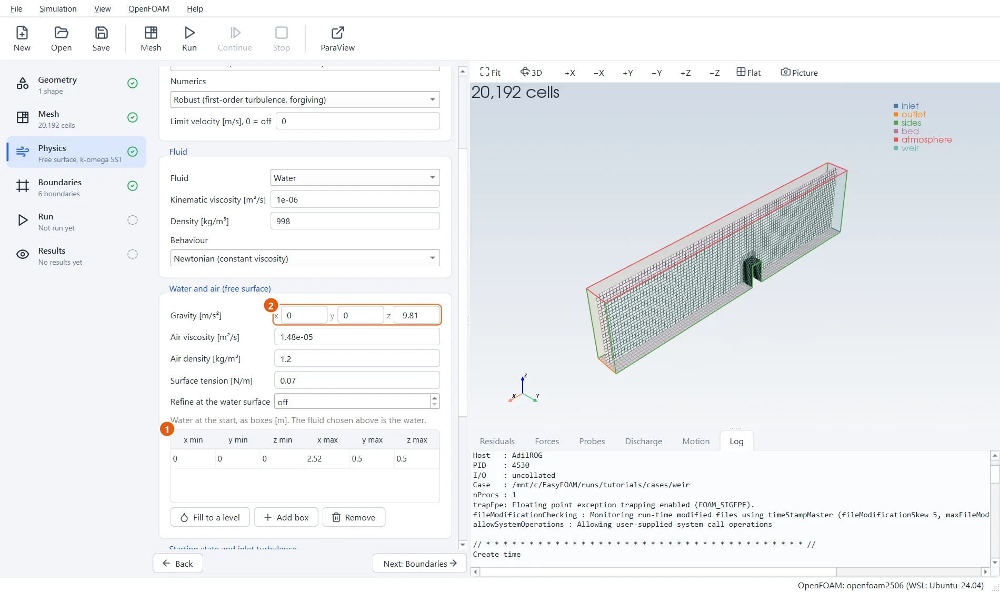
8The inflow
The inlet is the heart of a channel case. Inlet by flow rate brings in the discharge you ask for, and it lets the water find its own level on the inlet: you do not need to know the depth beforehand.
- Select inlet.
- Condition: Inlet by flow rate.
- Flow rate:
0.05m³/s.

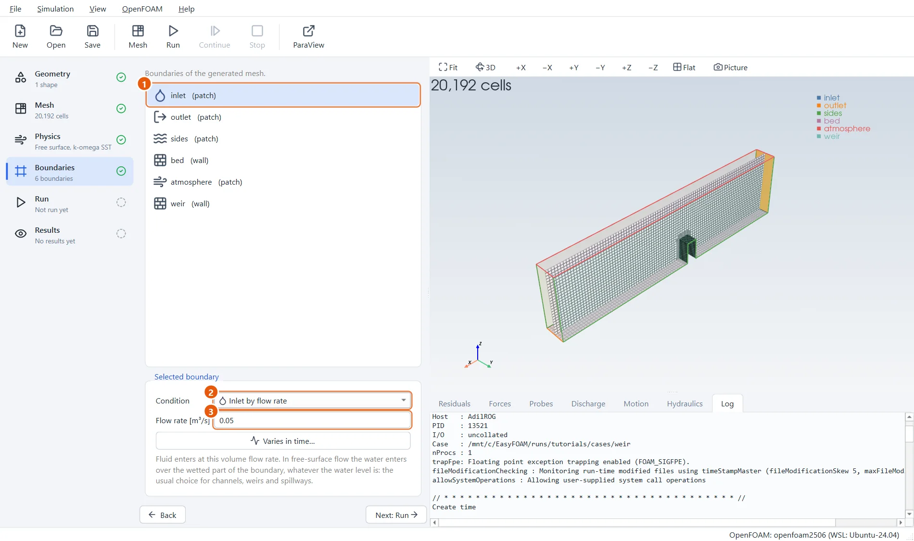
9The outflow
Downstream of the weir the water shoots along the bed. Free outflow lets whatever arrives leave undisturbed. The remaining boundaries need no numbers: atmosphere is open to the air, the sides are frictionless (slip), and bed and weir are walls.
- Select outlet.
- Condition: Free outflow.

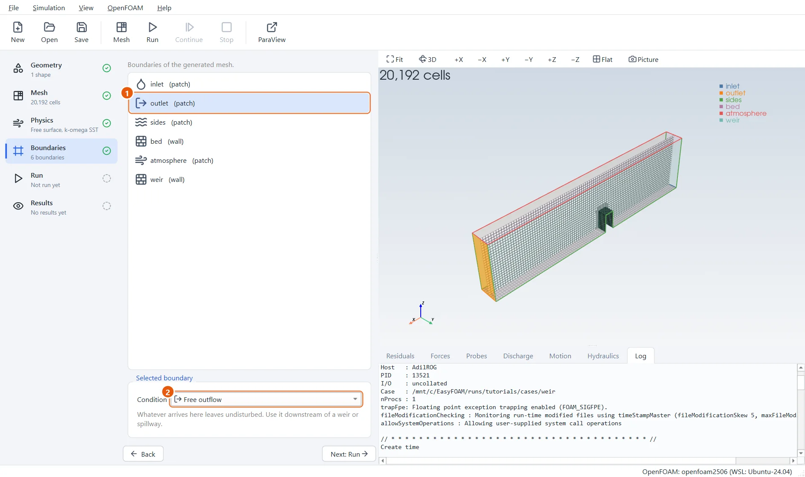
10A gauge and a discharge monitor
In the Run step, scroll down to the monitors. In a free-surface case each probe point acts as a gauge: it records the depth of water there. A second monitor records the discharge through a boundary. Together they tell you when the flow has become steady.
- One gauge in the reservoir, at
1.2,0.25,0.3. Only its x and y matter. - Under Discharge, Through:
outlet.

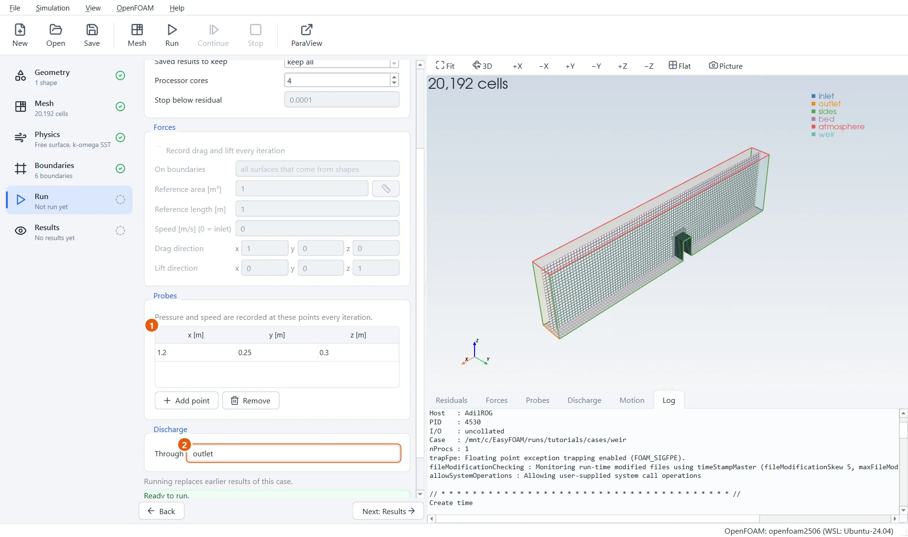
11Run for twenty seconds
The reservoir needs time to rise to the level that pushes 50 litres a second over the crest. Twenty seconds of simulated time are enough here.
- End time:
20s. - Save every:
0.5s. - Processor cores:
4. - Click Run in the toolbar (or press F6).

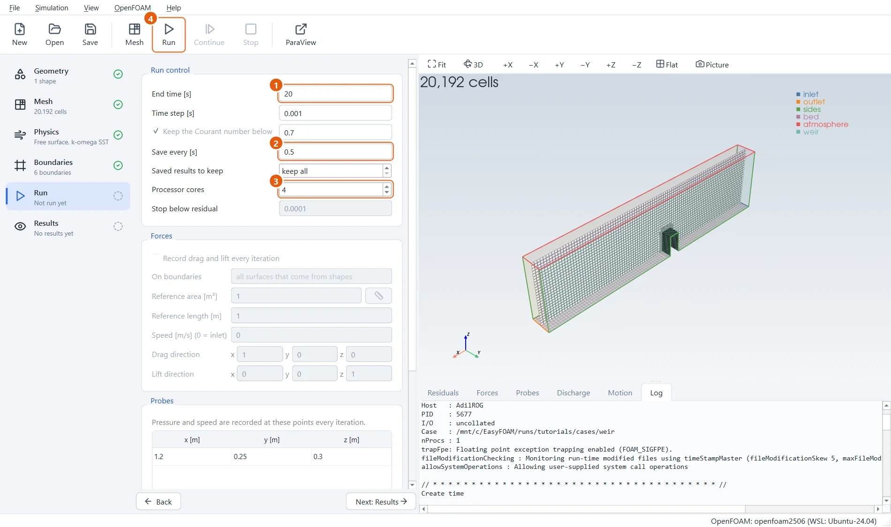
12Is it steady yet?
Watch the Discharge tab while the run goes on. At first nothing leaves, then the first surge arrives at the outlet, and finally the outflow settles at what comes in. When the outflow equals the inflow, the amount of water in the channel has stopped changing.
- Open the Discharge tab.
- The latest value. It should end close to 0.05 m³/s.
- How far the run is.

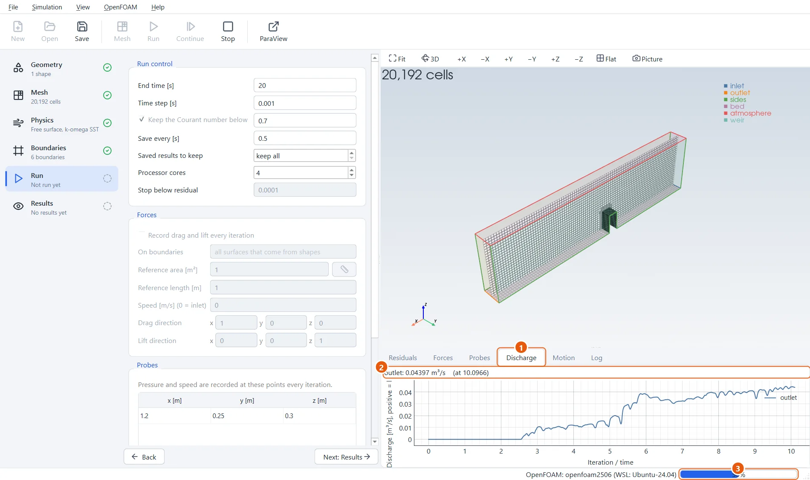
13The water level in the reservoir
When the run has finished, open the Probes tab. The gauge shows the depth in the reservoir rising and then levelling off at about 0.67 m. The crest is at 0.51 m, so the water stands about 0.16 m above it. That is the head on the weir.
- Open the Probes tab: the water depth at the gauge over time.

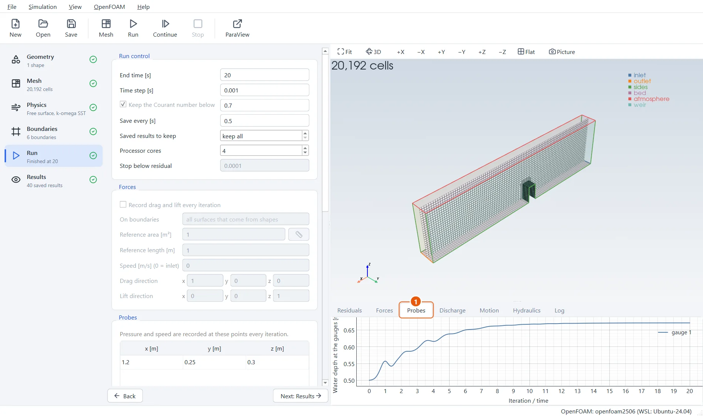
14The water surface
The Results step opens on the water surface, coloured by the speed of the water: slow in the reservoir, fast where it plunges over the crest and along the bed.
- Show: Water surface.
- Quantity:
Ucolours the surface by speed. - Step through Saved time to watch the flow establish itself.

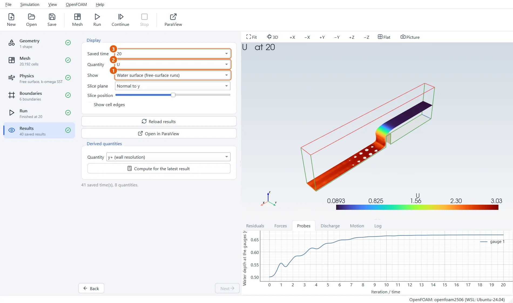
15Check it against the weir formula
For a broad-crested weir without losses, the discharge per metre of width is q = 1.705 × H^1.5, with H the head above the crest. Here q = 0.05 / 0.5 = 0.1 m²/s, which gives H = (0.1 / 1.705)^(2/3) = 0.151 m.
The simulation gives about 0.16 m. A real, square-edged weir has losses that the ideal formula leaves out, so a head a little above 0.151 m is what one expects. Keep in mind that the cells are 62.5 mm high, so there are only about three of them across the head: treat this as a check that the result is sensible, not as a calibration. For figures you can rely on, refine the mesh until the head no longer changes.
16Try it yourself
- Double the flow rate. By the formula the head should rise by a factor of 2^(2/3) = 1.59.
- Use
192,16,48cells (it will take much longer) and see how the head changes. - In the Results step, choose the quantity
cavitationIndexto see where the pressure on the structure is lowest. - Set Refine at the water surface to
1in the Physics step: the mesh then follows the surface.